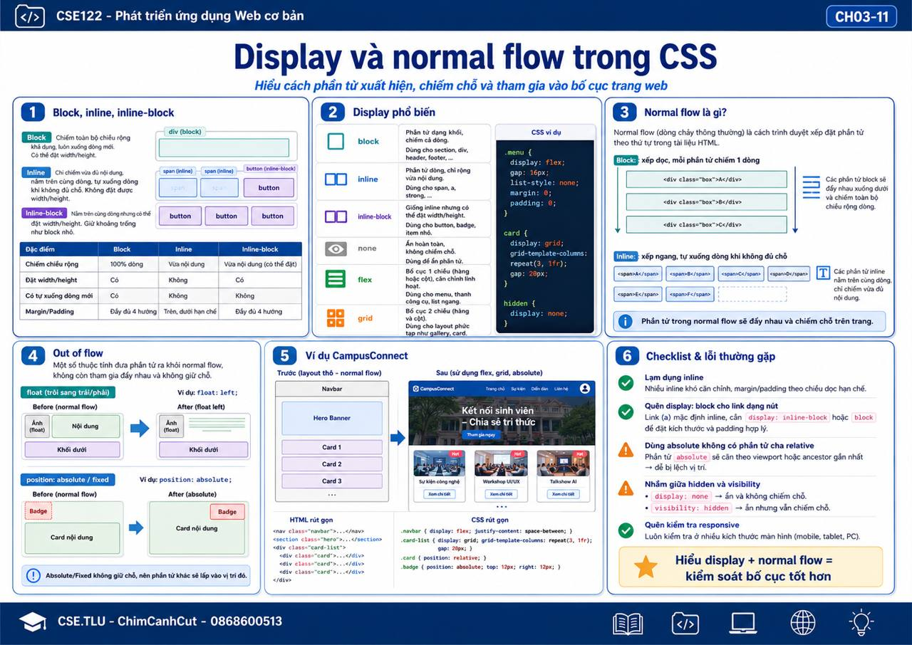

Slide viewer – ảnh trực quan theo chương
Chương 1. Nhập môn Web, Internet, môi trường dev


Chương 2. HTML cơ bản: cấu trúc, văn bản, liên kết, ảnh


Chương 3. HTML nâng cao: bảng, biểu mẫu, đa phương tiện



Chương 4. CSS cơ bản: selector, màu, nền, chữ


Chương 5. CSS Layout: Box Model, Flexbox, Grid


Chương 6. Responsive, Animation, nhập môn Bootstrap


Chương 7. Bootstrap Components


Chương 8. JavaScript cơ bản và DOM


Chương 9. JS nâng cao: Fetch API và dự án